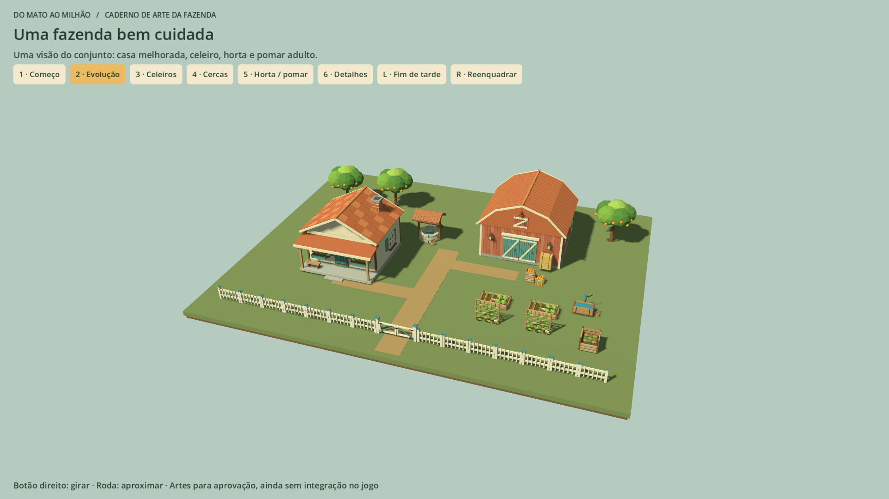
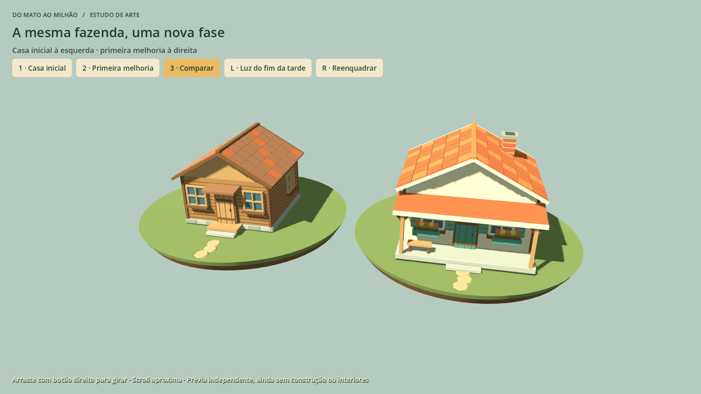
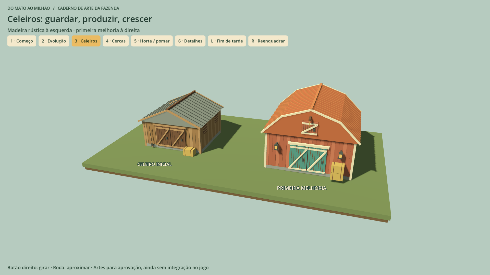
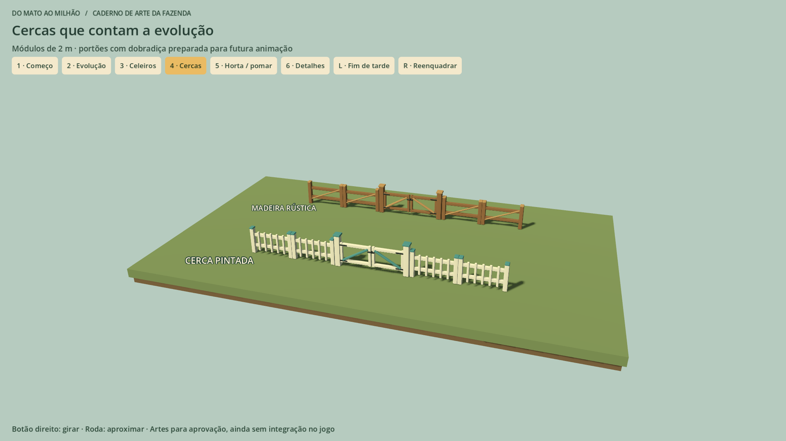
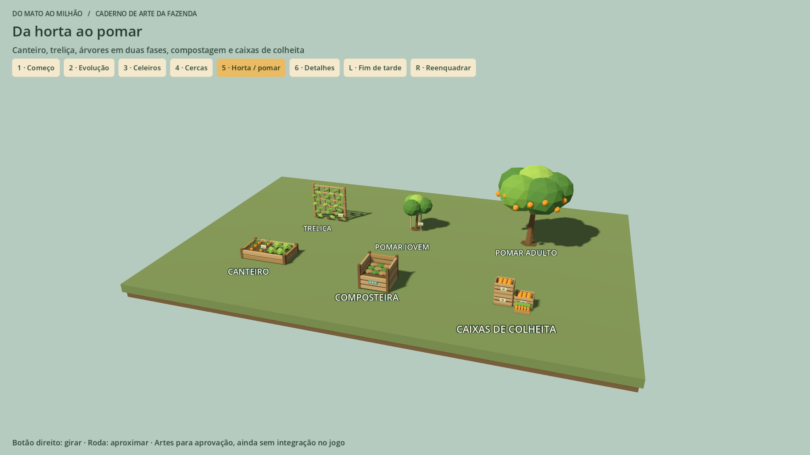
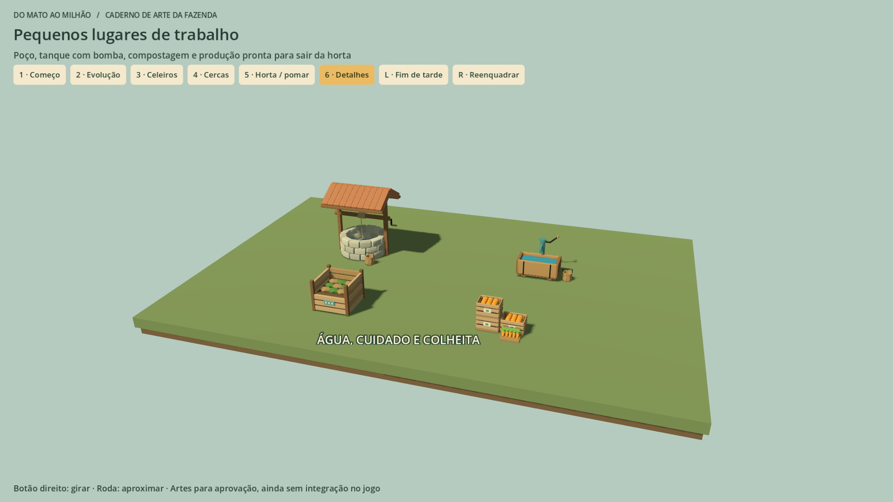

Do Mato ao Milhão / Estudo visual da fazenda
Do primeiro terreno
a um lugar cheio de vida.
Um conjunto para você aprovar de uma vez: construções em duas fases, horta, pomar e detalhes do cotidiano rural.
16 modelosFeitos no BlenderPrévia no GodotAguardando sua revisão
Clique em qualquer imagem para abrir em tamanho completo. Tudo aqui é arte para revisão, ainda separado do jogo e do trabalho no carro.
01 / A fazenda como um conjunto
A mesma ideia em duas fases: um começo modesto e uma propriedade mais cuidada. Estas composições ajudam a avaliar escala, cores e como as peças combinam.

Casa melhorada, celeiro, horta, pomar adulto e espaços de trabalho.
02 / Um lugar para morar
A casa simples de madeira ganha varanda, floreiras, paredes claras e chaminé na primeira melhoria.

As duas casas da primeira entrega, reunidas neste caderno.
03 / Espaço para a produção crescer
O celeiro rústico evolui para uma construção maior, com vermelho ocre, detalhes claros, sótão e um telhado de silhueta marcante.

Inicial à esquerda; melhoria à direita.
04 / Organizar sem perder o charme
Cercas rústicas e pintadas, com portões combinando. As peças são modulares para permitir diferentes desenhos de propriedade.

Quatro modelos: dois segmentos de cerca e dois portões.
05 / Plantar e ver crescer
Canteiro com cenouras e alfaces, treliça de feijão e laranjeiras em duas fases. Compostagem e caixas de produtos completam a área de cultivo.

Seis modelos para o cultivo e a colheita.
06 / O cotidiano da fazenda
Poço coberto, tanque com bomba, composteira e caixas de colheita tornam os espaços de trabalho mais reconhecíveis.

Detalhes que podem ganhar interações na futura integração.